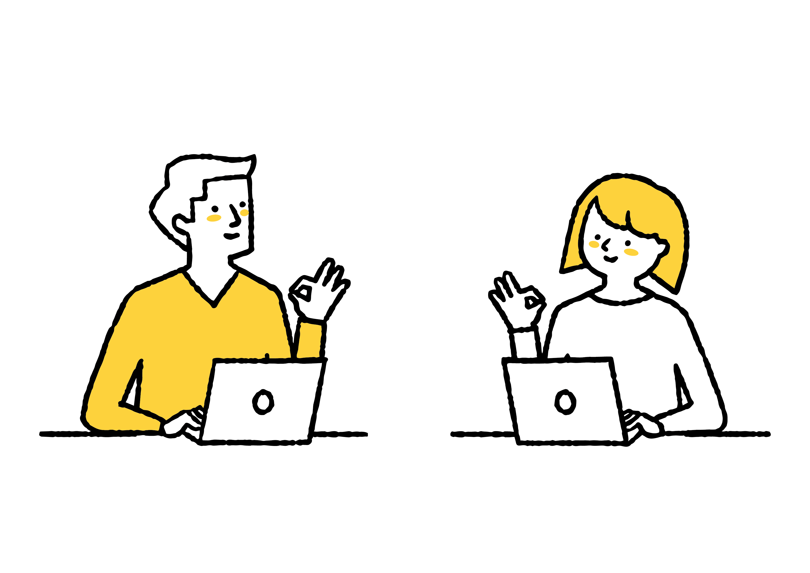

- 初回お試し無料
- 本名・顔出し不要
- 医療機関の診断不要
※本サービスは医療行為ではありません。精神障害、発達障害、ギフテッドの診断や検査は行いません。
※本サービスは心理職の有資格者によるカウンセリング行為ではありません。
※18歳未満の未成年はご利用いただけません。
NDnook（エヌディーヌック）とは？
ギフテッドネスや発達特性のあるニューロダイバージェント(ND)と、
同様の当事者性のあるピアサポーターが、
マンツーマンで対話する、オンライン上の小さな空間(ヌック)です。
神経多様性のある人

ニューロダイバージェント
Neurodivergent
当事者 兼 支援者
ピアサポーター
Peer Supporter
個別対話だから、できること
-
会話内容は誰にも知られません
オンラインなので、誰にも知られず、こっそり話せます。
匿名(ニックネーム)、カメラオフでOK。
ご利用履歴や会話内容を第三者に公開することはありません。 -
特性について、隠さず話せる
話し相手のピアサポーターにも、認知特性があります。
似たような経験をもつ当事者同士だからこそ、
「普通はこうだから」を気にせず、対等な立場で話せます。 -
診断がなくても大丈夫
ギフテッドについて、明確な診断基準はありません。
グレーゾーンでも、自認することに迷っていても大丈夫。
今のあなたらしさを、一緒に深堀りしましょう。
成人2E当事者が、ピアサポーターとして対話します
ピアサポーター
でしさん
私は30代で、知能検査(WAIS-Ⅲ)の全検査IQが133、AuDHD(ADHDとASDの併発症)として診断された、2E(twice exceptional)です。
大学卒業後、10年以上の会社員経験を経て、今はフリーランスとして働きながら、通信制大学で心理学の勉強に取り組んでいます。
私自身、就学・就労の安定化や、認知特性の自己受容、夫と息子との家庭生活など、さまざまな人生の課題と向き合いながら暮らしています。
podcastとnoteで、「成人当事者の生き方」をテーマとしたコンテンツを発信しています。
ギフテッドについて語り合う“雑談会”も、月1回のペースで開催中です。
個別対話では、できないこともあります…
医療行為・カウンセリング行為
- 精神障害、発達障害、ギフテッドなどの診断・検査はできません。
- 心理療法を取り扱うカウンセリングはできません。
- 本サービスは医療行為・カウンセリング行為の代替手段ではありません。利用可否について、担当の医師・心理士にご相談ください。
意思決定や課題解決の代理行為
- 正解を指示することや、代理で意思決定をすることはできません。
- 利用者の課題を代理で解決したり、利用者をとりまく環境や人間関係を変えることはできません。
- 利用者ご自身で、意思決定と環境調整を適宜実行してください。
利用者の特性を完全に理解し、利用者の意見を完全に肯定すること
- ギフテッド/高知能は、全知全能ではありません。ときには間違うこともありますし、知らないこと、わからないこともあります。
- たとえ当事者同士でも、特性や人格は同一ではありません。
- あくまで【対話】なので、必ずしも利用者の意見に賛同するとは限りません。状況に応じて、異論を示すことがあります。
ご利用料金
初回お試し利用
（60分）
無料
【期間限定】モニター価格
-
都度決めたい方に
1セッション
(60分×1回)
2000円
-
迷ったらこれ！
2セッション
(60分×2回)
3000円
-
じっくり対話を継続
4セッション
(60分×4回)
5000円
隔週または月1回のペースで、継続してのご利用をおすすめします。
あとからセッション回数を追加して購入することも可能です。
※お支払い方式は、オンライン決済(PayPay)です。
ご利用の流れ
-
① ご利用案内の確認
当ページ下部のご利用案内をご確認いただき、予約ボタンを押してください。
-
② 初回予約
ご希望の日時をお選びください。予約完了のメールが届きます。
予約の変更・キャンセルを行う場合は、メールから設定してください。 -
③ 話したいことの整理
事前に「話したいこと」の一言メモを用意しておくことをおすすめします。
用意せずに、当日その場で心に浮かんだことをお話しいただいても構いません。 -
④ 初回お試し利用
予約完了メールに記載のURLから、オンラインルームに入室してください。
私”でしさん”とマンツーマンで、60分間ゆっくりお話しいただけます。
終盤に、次回以降のセッション回数とスケジュールについて話し合います。
ご利用案内
サービス概要
- オンライン通話（Google Meet）でセッションを実施します。
- 常時カメラオフのまま入室いただいても構いません。視線が気になる場合は、お申し付けいただければ、こちらもカメラをオフにします。
- 複数人での参加や、保護者・介助者の付き添いはご遠慮ください。
- 本サービスのご利用条件は「利用者ご自身が、単独で、初対面の他者と、リモートのビデオ通話で、日本語で意思疎通できること」です。
- 酩酊状態、躁状態・鬱状態、薬物や体調不良の影響により著しく精神が不安定な状態でのご利用はお断りします。セッションの途中であっても、状態が判明した場合は中止し、返金対応はいたしません。医療機関への受診判断はご自身でお願いします。
予約・変更・キャンセル
- 日程調整ページから申し込み、セッション予約を完了してください。
- 予約が未完了のまま、お申込み日より30日以上経過した場合は、自動的にキャンセルとなります。再度、新規でのお申込みをお願いいたします。
- 予約の変更・キャンセルは、開始時刻の1時間前まで対応可能です。やむを得ない遅刻については待機可能ですが、長時間（目安として15分以上）の遅刻については、相談のうえ続行可否を判断させていただきます。
お支払い方法
- お支払い方法はオンライン決済（PayPay）でお願いします。
- 有料セッション初回の終了時にお支払いいただき、入金確認をいたしますので、事前のご準備をお願いします。
プライバシーポリシー
- 個人情報の厳守を徹底いたします。第三者や外部に会話内容を送信・公開することはありません。セッション中にAIツールを併用することはありません。
- トラブル防止のため、利用者さまご自身が第三者や外部に会話内容を送信・公開すること、セッション中にAIツールを併用することを禁止します。
- サービスに対するご意見・ご感想や、体験レポートについて、第三者に送信すること、SNS等の外部に公開することは、特に制限を設けておりません。ただし誹謗中傷に抵触する場合は、然るべき法的措置を取らせていただきます。
禁止事項
カスタマーハラスメント
- 暴言、脅迫、恐喝、威嚇、侮辱、人格否定、被害妄想、差別的発言、謝罪の強要
- SNS等における誹謗中傷、個人情報の暴露、レビューサイト等における荒らし行為
- 故意かつ反復的な時間外延長行為、執拗な連絡行為
- 金品の贈答、私的な交友・交際の強要、他の利用者に対する妨害・批判行為
- 性的ハラスメント、ストーカー行為、個人情報をみだりに聞き出す行為
- 法令・公序良俗に違反する行為
目的外の利用行為
- 医療行為・カウンセリング行為の強要
- 医療的診断の要求：「私がギフテッドかどうか診断してください」など
- セカンドオピニオン：「主治医とは別の専門家としての意見をください」など
- 医療機関を受診すべきか判断を仰ぐ行為、おすすめの医療機関を聞き出す行為
- 医療機関の指示に反する行動をサービス提供者に肯定・正当化させる行為
- 政治思想、社会運動、反社会的勢力、宗教、スピリチュアル領域、自己啓発活動、ビジネスへの勧誘行為
- 広告・宣伝・販売・斡旋・商談・会員登録やSNSフォローの強要など、営利目的の行為
利用基準の違反
- 18歳未満の未成年による利用
- 反社会的勢力の関係者による利用
- 申し込み者と異なる人物やAIによるなりすまし利用
- 複数人での利用
- 保護者・介助者の付き添い
セッションの妨げとなる行為
- 酩酊状態、せん妄状態、希死念慮、躁状態、鬱状態、オーバードーズ、その他著しく精神が不安定な状態での利用
- オンラインの音声通話を用いた、日本語での意思疎通が困難な状態での利用
- 過度の遅刻・早退（目安として15分以上）、直前キャンセルを繰り返す行為
- セッション料金の滞納を繰り返す行為
セッション内容の外部流出
- オンラインセッションの録音・録画・書き起こし、AIツールの併用
- 録音・録画・書き起こしデータの公開、第三者へのデータ送信、AIへのデータ送信